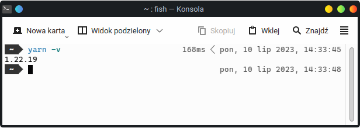

import velesresearch as vlsGetting started
Prerequisites
Veles is a Python library, so before using it, you need to install Python. You can download an installation bundle from the official website. During installation, check the box saying to add Python to PATH. It will enable you to run Python by writing python in the terminal, without the full path to python.exe. If you’re using Linux or MacOS, you already have Python installed by default.
Using an IDE is recommended. You can use any IDE, but I highly recommend Visual Studio Code. If you want to use it, it’s a good idea to also download Python Extension Pack and Pylance. You can do it from within the program. You can also use RStudio if you want.
Some really basic knowledge how to use Python is recommended. If you know what’s a variable and how to call functions, you’re good to go. If you don’t know anything about programming, this 1-hour Python introduction will be more than enough (although I think VSCode is better than PyCharm).
To actually build (or even preview) your survey, you must have yarn installed. It’s a JavaScript package manager and is used to download some dependencies like Survey.js and React. yarn gets installed with Node.js. If you’re a Windows user, you can download it from the official website. MacOS comes with Node.js preinstalled. If you’re a Linux user, chances are you have Node.js already installed. If so, you should be able to run this command in your terminal (PowerShell or cmd in Windows):
npm -vOtherwise you can use one of the following commands:
# Ubuntu (and other apt distros)
sudo apt install npm
# Arch
sudo pacman -S npm
# winget
winget install OpenJS.NodeJS.LTS
# Chocolatey
choco install nodejs-lts
# Homebrew
brew install nodeAfter installing node.js, activate yarn with this command in the terminal:
corepack enableIf everything went well, command yarn -v should return a version number.

yarn -v in Linux terminalyarn -v in Linux terminalInstallation
To install Veles, open your terminal (PowerShell or cmd on Windows), write the following command and hit enter.
pip install velesresearchYou can also choose development version (unstable) using this command:
pip install velesresearch@git+https://github.com/jakub-jedrusiak/VelesResearch.gitCreate project
Veles project is just a folder with a Python script. Output will be created in the same folder. Create a folder and open it in Visual Studio Code. From inside VS Code you can create a file with .py extension. It it, we’ll be writing the survey structure.
The first thing we need to do is to import the velesresearch library. To do this, at the top of your script write:
Survey structure
In SurveyJS, which is the base of Veles, surveys consist of pages, panels and questions. We can create them separately and then combine them into a complete survey.

Veles is a Python library, so there are many ways to achieve this in practice. We can put things in separate variables and then combine them or nest appropriate functions. In here I’ll mainly be using the first approach.
Questions
In Veles, questions are a class of objects. There are two main ways of creating them – separately or when we want to convert a whole questionnaire at once. In both cases we use an appropriate question function. See the docs
radio()
Let’s start with creating some demographic questions with vls.radio(). The syntax is as follows:
vls.radio(name, title, *choices, **kwargs)To create a single-choice question we need to invoke the vls.radio() function and fill it with appropriate data. The first thing is the name argument which is the internal code of the question that will later become the name of the column in the database. Then we have title which is the actual text of the question the participant will see. Finally we need to fill in the possible answers. We can separate them with commas. In the end we get:
gender = vls.radio(
"gender",
"What is your gender?",
"Woman",
"Man",
"Other/I don't want to answer",
)
There are two things to notice here. Firstly, I save the created question to a variable called gender. We will then use the variable to put the question in a page. Secondly, all the texts are inside quotation marks. That is required, because otherwise Python will think the words are variables.
Question options
Each question can have a series of additional parameters specified. For example we can make an answer required, add a subtitle, add an “Other” option that opens a textbox to specify a custom answer, hide the question number, specify when a question should be visible and so on.
gender = vls.radio(
"gender",
"What is your gender?",
"Woman",
"Man",
isRequired=True,
showOtherItem=True,
showNoneItem=True,
noneText="Prefer not to say",
hideNumber=True,
description="Choose an answer from options below",
)
Every type of question (as well as pages and surveys) has its set of possible options. To check the possible options you can consult the docs or (in VS Code with Pylance installed) you can hover your mouse over the name of a function and scroll though the popup.


Whole questionnaires
Often in behavioral sciences we want to use a whole questionnaire. It’s quite pointless to format every item separately, because they often have the same scale, options and the labels are predictable. Veles allows for including a whole questionnaire at once.
To do this, we need to have the questionnaire in the form of a Python list. We can format it either by hand…
# manually formatted list
RSES_items = [
"I feel that I am a person of worth, at least on an equal plane with others.",
"I feel that I have a number of good qualities.",
"All in all, I am inclined to feel that I am a failure.",
"I am able to do things as well as most other people.",
"I feel I do not have much to be proud of.",
"I take a positive attitude toward myself.",
"On the whole, I am satisfied with myself.",
"I wish I could have more respect for myself.",
"I certainly feel useless at times.",
"At times I think I am no good at all.",
]…or use the power of programming and format it automatically. Here we have the questionnaire in a textual form, where every item is in its own line. In other words, there the items are separated by a line break. We can save the questionnaire in a variable. Notice the triple quotation marks """. They allow us to create a multiline strings.
# triple quotation for multi-line strings
RSES_items = """I feel that I am a person of worth, at least on an equal plane with others.
I feel that I have a number of good qualities.
All in all, I am inclined to feel that I am a failure.
I am able to do things as well as most other people.
I feel I do not have much to be proud of.
I take a positive attitude toward myself.
On the whole, I am satisfied with myself.
I wish I could have more respect for myself.
I certainly feel useless at times.
At times I think I am no good at all."""So I saved the questionnaire into a variable called RSES_items. I can now tell python to split it, so it would become a list of items. To do this, we can use the split() method. Methods are functions that we write after a dot to apply them to something. split() takes one argument that is the thing that it needs to split by. In our case it is a line break, in programming denoted with "\n". To split the RSES_items string we could write RSES_items.split("\n").
RSES = vls.radio(
"RSES",
RSES_items.split("\n"),
"Strongly Agree; Agree; Disagree; Strongly Disagree".split("; "),
isRequired=True,
)In here I’ve splitted the inside the radio() function, but I also could have done it anywhere before that. To learn more about Python string methods, see W3Schools lesson about them. Had I used the manually formatted list, I wouldn’t have to write the split() part. Also notice what I did with the scale – we don’t have to save our texts in variables, we can split them directly inside the question creating function. Just do what seems more readable and straightforward. That is to say, I could have also written something like this:
RSES = vls.radio(
"RSES",
"""I feel that I am a person of worth, at least on an equal plane with others.
I feel that I have a number of good qualities.
All in all, I am inclined to feel that I am a failure.
I am able to do things as well as most other people.
I feel I do not have much to be proud of.
I take a positive attitude toward myself.
On the whole, I am satisfied with myself.
I wish I could have more respect for myself.
I certainly feel useless at times.
At times I think I am no good at all.""".split(
"\n"
),
"Strongly Agree; Agree; Disagree; Strongly Disagree".split("; "),
isRequired=True,
)The labels will become "RSES_1", "RSES_2", "RSES_3" etc.
List comprehension
This part is not necessary but extremely useful.
The power of Python allows us to bulk modify our questions and answers. This might be the greatest advantage Veles has over its GUI-based1 alternatives. Let’s imagine we have a list of drinks we want to ask about in our survey. Yet we don’t want the question text to be just “Tea” or “Coffee”. That would disrespect tea. We need something like “How do you feel about tea?”. English being fairly uncomplicated, we just need to put the drink’s name into the sentence. We can easily use a loop and an f-string2 to do just that.
# get our drinks and make them a list
drinks = "tea coffee juice water".split(" ")
# modify with a loop
drinks = [f"How do you like {drink}?" for drink in drinks]
# add some answers
answers = "I love it; I like it; It's OK; I don't like it; I despise it".split("; ")
# make it a list of questions
q_drinks = vls.radio("drinks", drinks, answers)There’s a few things to unpack here. First we get the list of our drinks separated with some common separator. Put simply, there should be some string (text) separating single drinks – a space in this example. If we also had "orange juice" on the list we would need something else, e.g. a comma followed by a space ("tea, coffee, juice, water, orange juice"). We then split it and save it in the drinks variable.
The third step may seem more complicated, so let’s take it slowly. That is something called list comprehension. It’s a form of a loop in Python that allows us to quickly do something with a list, e.g. call a function for each element or put every element in a certain string. If you think about our question, it is basically “How do you like {drink}?” where “{drink}” is the name of each drink. That is what we start with. Inside square brackets we write [f"How do you like {drink}?"]. Notice I have added f before the opening quotation mark. These so called “f-strings” are Python’s way of saying that there is a variable in a string. The variable itself must be inside curly brackets.
Now we just need to tell Python to do this for each of our drinks. Python doesn’t know what drink means if we don’t tell it. It is not that smart to infer it from the fact that we called our list drinks. To tell Python what we mean by {drink}, we need to write for drink in drinks so we end up with [f"How do you like {drink}?" for drink in drinks]. We could have called it differently. [f"How do you like {i}?" for i in drinks] would give the same result, but it makes more sense to call it drink rather than i, doesn’t it? [f"How do you like {drink}?" for drink in drinks] basically means “Give me this string "How do you like {drink}?" where drink means a value from the list called drinks. Do this for every drink in the list called drinks”. We also save the newly created list to the drinks variable, overwriting it.
When we run it, the list ['tea', 'coffee', 'juice', 'water'] becomes ['How do you like tea?', 'How do you like coffee?', 'How do you like juice?', 'How do you like water?']. The new list can be then passed into the radio() function. It could’ve been done manually but learning this technique allows for doing it for arbitrarily long lists.
Panels
To be implemented…
Pages
Every survey needs to have at least one page. Page is basically a list of questions but with its own name, title, description and options. You can create it with page().
vls.page(name, questions, **kwargs)Pages have their own names. They don’t yet have many uses in directly in Veles but are still mandatory for SurveyJS compatibility reasons. You can also use them when you write custom JS code. Questions can be provided as a list or values separated by commas. Pages also have their own options like title, description or questions order. See the docs.
intro = vls.page("metrics", gender) # previously created gender question
self_esteem = vls.page(
"RSES",
RSES,
questionsOrder="random",
title="Rosenberg Self-Esteem Scale",
maxTimeToFinish=300, # time limit in seconds
)Survey
When all elements are created, we can combine them into the final survey. We can do this with the survey() function. It does two things – returns a Survey object and creates your survey’s structure.
vls.survey(pages, **kwargs)vls.survey(
"My smart research",
intro,
self_esteem,
title="Self-esteem and gender",
)By default the page is not built for production, i.e. it is not compiled into a form that can be actually hosted. That is because it takes around a minute and is not needed for testing. When you complete designing your survey, set buildForProduction to True. Be default, the survey will be created in a subfolder called “survey”. To change the folder’s name or path, use the folderName argument.
vls.survey(
"My smart research",
intro,
self_esteem,
title="Self-esteem and gender",
buildForProduction=True,
)The structure of the generated files and what to do with them is explained in Hosting section below.
View and test
After writing your survey, you need to create it. Don’t worry, it all happens automatically. Just run your script with Python and wait for the website to be built. It might take some time the first time, but after that it will be much faster. How do we run a python script? There are many ways to do this. If you use Visual Studio Code, there’s a “Run” button in the upper right corner. Just click it and see if the console prints any errors.


If everything went well, you should have a folder named “survey”. To run your survey, open the folder in a terminal. In VS Code you can use Terminal > New terminal. Then move to the survey folder with:
cd surveyTo run your survey, run a second command:
yarn startThis runs a local server on your computer. To access your survey, open your favourite browser and type localhost:3000 in the address bar. The server will work until you turn it off, so if you update your survey, just run the survey script again and the page should automatically refresh. You can now test your survey in your own browser.
If you want to see the data from your tests, open the developer tools of your browser (usually Ctrl+Shift+I) and go to the Network tab. If you have some kind of categories in there, you can select Fetch/XHR. If you click the “Complete” button with this tab opened, you will see a server response called “submit/”. When you click it and navigate to the Payload or Request tab, you will see the data you have sent to the server in json format.

If you want, you can copy the json object and convert to .csv or .xlsx using some online service. If you have multiple answers, enclose them all with square brackets and separate with commas before converting to csv. It should look similar to this:
[
{
"id": "y71c6K8S",
"RSES_1": "Strongly Agree",
"RSES_2": "Agree",
"group": 1,
"datestarted": "2024-09-22T19:13:05.116Z",
"datecompleted": "2024-09-22T19:13:20.192Z"
},
{
"id": "y71c6K8S",
"RSES_1": "Strongly Disargee",
"RSES_2": "Strongly Agree",
"group": 2,
"datestarted": "2024-09-22T19:21:59.245Z",
"datecompleted": "2024-09-22T19:22:42.863Z"
}
]Hosting
The main way to host Veles surveys is through VelesWeb. It is only available to academics. Veles isn’t meant to be a commercial product so even if VelesWeb will get some restrictions and paywalls (it mostly depends on the maintenance costs), there will always be an alternative. You can host your surveys yourself.
VelesWeb
When you generate a Survey, you get a folder with a series of files. Their structure is not that important if you intent to use VelesWeb. The only file that will be interesting, is the main.js file in the build folder.
Log in to your VelesWeb account, create a new survey, give it a title and – optionally – a description. Then choose the main.js file from your hard drive. Submit and wait. It might take a minute or two. After that you’ll see your survey’s overview.

From here you can test the survey, make it offline or turn on the real data collection. Each survey has two databases – the main one and the test one. The test mode is the default. As you can see below, responses collected in both modes are separated. This makes it easier to test your survey without worrying about messing up the data.
Self-hosting
If we want to manage our surveys ourselves, we need a place to host them and a place to store the results. Luckily there are free methods to do both. In here we’ll use Vercel for hosting and MongoDB Atlas for storing the results. Additional benefit of self-hosting is that we can use our own domain name e.g. create a special subdomain in our university’s domain (like surveys.uwr.edu.pl). That is if someone will give us access to the DNS settings.
Configuration
Go to VelesSurvey for Vercel GitHub repository. Click on “Use this template” button. Give your repo a name and confirm with “Create repository from template” button. Of course you need to be logged into your GitHub account.
Go to Vercel, create an account and from there start a new project. Link the project to your newly created GitHub repo.
Don’t change the default deployment settings but do click on
Enviroment variables. Add a new variable namedSECRET_KEYwith a value generated with this website and confirm with “Add” button. If you plan to use a custom domain, you add aDOMAIN_NAMEvariable with a value like.uwr.edu.pl. Don’t worry, if you don’t know yet. You can always add it later. You can read more about custom domains here.

When the building process ends, you can visit your page. It’s just a white screen with a moving Veles logo. By design, there’s no survey list on the main page. It helps keeping everything confidential.
Not only we need a place to collect our responses, but also somewhere to store them. For this purpose we’ll use MongoDB and its free 512 MB of space. My rough calculations say it will allow us to collect around 1.5 milion responses before we run out of space. I wish everyone this kind of probe sizes. Go to MongoDB, create a free account and then a free cluster. The website will take you through the whole process.
Now we need do connect Vercel and MongoDB. You can do it on this website. Click “Add integration” and go with the forms. It will make some needed security changes to your MongoDB cluster, so the answers can be sent from Vercel app to the database.
That’s it. Test your application by going to
/tea_surveyin your Vercel app (e.g.https://tea-research-project.vercel.app/tea_survey/). You should see a survey with a series of questions about tea. When you complete it, you should see a new response in your database.
Using
When you create a survey with Veles, you get a folder with a series of files. The most important one is main.js from build subfolder. To add it to your site, you need to create a new subfolder in the surveys folder in your repository. The easiest way to do it it through GitHub Desktop. Use it to download (or “clone”) your repository and create a new folder inside the surveys folder. The name of that folder will become a link to your survey, e.g. if you name it black_tea_study, the link will be something like https://tea-research-project.vercel.app/black_tea_study. Then put your main.js in your newly created folder. Do not rename it. Then use GitHub Desktop to upload (or “push”) your changes. After a minute or so, your survey should be available.
To read and save your data you can use web desktop on mongodb.com or with a special program called MongoDB Compass. After any responses are recieved (even for the tea survey), a new database called VelesResponses is created. Every survey gets its own folder (or “collection”). From there you can easily export your data to .csv or .json.
If you use R for the analysis, you can connect to the database directly, without having to download anything. See this article for the details. You can also do that with Python.
PsychoJS experiments
To be implemented…